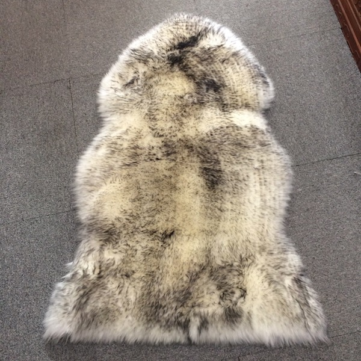

Sheepskin Wool Chair Seat Cushion | Pressure Relieving Chair Pad
$59.99
Sit in Comfort All Day Long
Transform any chair into a comfort haven with our sheepskin wool chair seat cushion. Premium Australian merino wool provides natural pressure relief, reducing discomfort during extended sitting. Temperature regulating fibers keep you comfortable year-round. Removable washable cover ensures easy cleaning.
Specifications
- Material: 100% Australian Merino Wool + Removable Cover
- Wool Length: Medium Wool (25-35mm)
- Size: 40cm x 40cm
- Origin: Australian Made
- Features: Non-slip base, Removable cover, Machine washable
Keywords
sheepskin chair cushion, wool chair pad, pressure relieving chair seat, breathable chair cushion, washable chair pad, office chair sheepskin, dining chair cushion